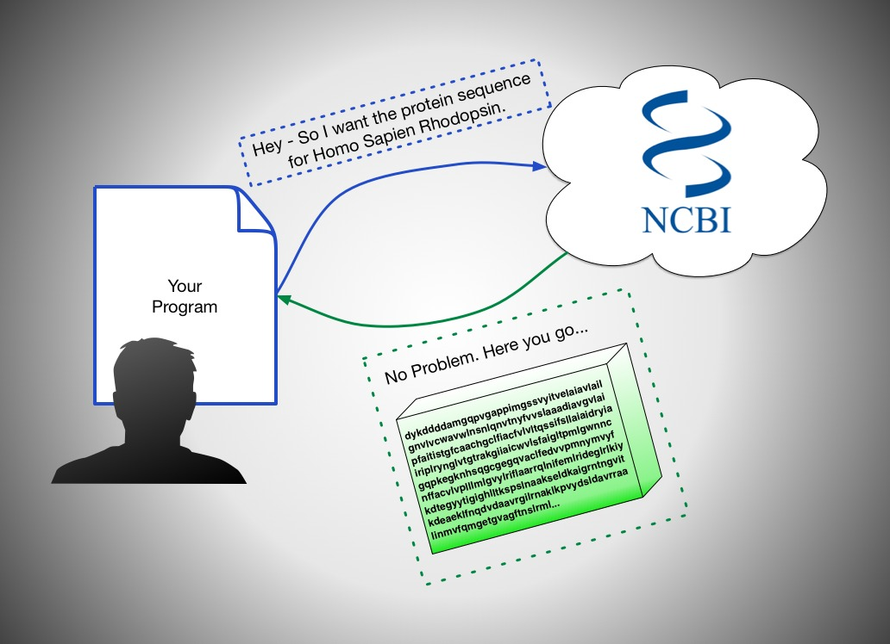
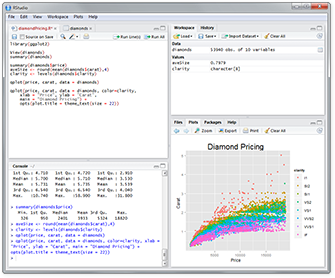

Bio Database Access and Sequence Alignment
with Python and BioPython
Hit space for overview. Navigate with arrow keys.
What's an API?
{kind=link}
Lots of Accessible Data
- Over 150 Biological APIs listed at ProgrammableWeb
- That means even more exist!
- Over 20% are JSON APIs, denoting recent growth
Bioinformatics has it good
- Data from Programmable Web
But wait...
Why should I learn to use
APIs
when I can already access the data via the
web?
APIs can help if...
>3
-
You're doing something more than a few times
-
You're chaining together steps
- 
-
You want structured and consistent research results
{kind=link}
Tools
"Click" into the tiers!
- Data from Bioinformatics Survey
Our Focus
-
Python
BioPython

A Brief Introduction
Inspiration for ExamplesSearching
from Bio import Entrez
Entrez.email = "bjorgep@students.wwu.edu"
search_handle = Entrez.esearch(db="nucleotide", term="Opuntia[orgn] and rpl16", usehistory="y")
opuntia_rpl16_search_results = Entrez.read(search_handle)
search_handle.close()View Fullscreen | Opuntia (Wiki) | rpl16 (Wiki) | Search Results | Entrez Technical Docs
Retrieving
file = open("opuntia_rpl16.fasta", "w")
opuntia_rpl16_fasta_data = Entrez.efetch(db="nucleotide",rettype="fasta", retmode="text", webenv=opuntia_rpl16_search_results["WebEnv"], query_key=opuntia_rpl16_search_results["QueryKey"]).read()
file.write(opuntia_rpl16_fasta_data)
file.close()View Fullscreen | Results File | Equivalent Web Data (Click FASTA for each result)
Functions
from Bio import Entrez
Entrez.email = "bjorgep@students.wwu.edu"
def search_and_retrieve_fasta(database, searchterm, filename, batch_size=3):
# SEARCH
search_results = Entrez.read( Entrez.esearch(db=database, term=searchterm, usehistory="y") )
# RETRIEVE
file = open(filename, "w")
count = int(search_results['Count'])
for start in range(0,count,batch_size):
end = min(count, start+batch_size)
print "Going to download record %i to %i" % (start+1, end)
data = Entrez.efetch(db=database,rettype="fasta", retmode="text", retstart=start, retmax=batch_size, webenv=search_results["WebEnv"], query_key=search_results["QueryKey"]).read()
file.write(data)
file.close()
# You can now do all these steps in just one line!
search_and_retrieve_fasta("nucleotide", "Blossfeldia[orgn] and rpl16", "blossfeldia_rpl16.fasta")View Fullscreen | Blossfeldia | Results File | Equivalent Web Data (Click FASTA for each result)
Parsing
from Bio import SeqIO
blossfeldia_rpl16_sequences = list(SeqIO.parse("blossfeldia_rpl16.fasta", "fasta"))Sequence Objects
first_blossfeldia_rpl16_sequence = blossfeldia_rpl16_sequences[0].seq
# GC %
from Bio.SeqUtils import GC
GC(first_blossfeldia_rpl16_sequence)
# DNA --> RNA --> DNA
first_blossfeldia_rpl16_sequence.transcribe()
first_blossfeldia_rpl16_sequence.back_transcribe()
# DNA Coding Strand --> Protein
first_blossfeldia_rpl16_sequence.translate()Blasting
from Bio.Blast import NCBIWWW
from Bio import SeqIO
first_blossfeldia_rpl16_sequence = blossfeldia_rpl16_sequences[0].seq
result_handle = NCBIWWW.qblast("blastn", "nt", _first_blossfeldia_rpl16_sequence)
save_file = open("blast_search_on_first_blossfeldia_rpl16_sequence.xml", "w")
save_file.write(result_handle.read())
save_file.close()
result_handle.close()Sequence Alignment
# Clustal
import os
from Bio.Align.Applications import ClustalwCommandline
clustalw_cmd_line = ClustalwCommandline("clustalw2", infile="opuntia_rpl16.fasta")
stdout, stderr = clustalw_cmd_line() #outputs two files opuntia_rpl16.aln, opuntia_rpl16.dnd
# Read Multiple Alignment
from Bio import AlignIO
opuntia_rpl16_alignment = AlignIO.read("opuntia_rpl16.aln", "clustal")
print opuntia_rpl16_alignment
# Draw Phylo Tree
from Bio import Phylo
opuntia_rpl16_tree = Phylo.read("opuntia_rpl16.dnd", "newick")
Phylo.draw(opuntia_rpl16_tree)
View Fullscreen | ClustalW Download | Other Sequence Techniques | Simple Pairwise Alignment | opuntia_rpl16.aln (Alignment File) | opuntia_rpl16.dnd (Newick Tree)
Do you have what it takes?
Absolutely Yes
Non-CS people know the tools
CS People know how to mashup the tools
Some more Resources
By Philip Bjorge
Put Together With:

Bioinformatics Database Access Presentation by Philip Bjorge is licensed under a Creative Commons Attribution-NonCommercial-ShareAlike 3.0 Unported License.
Based on a work at github.com.